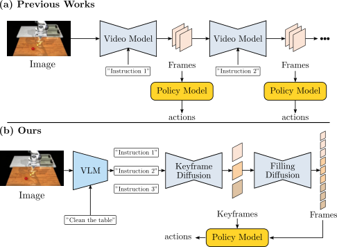
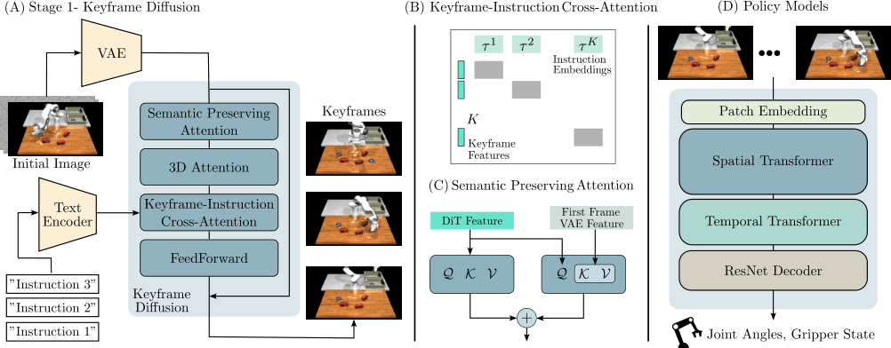
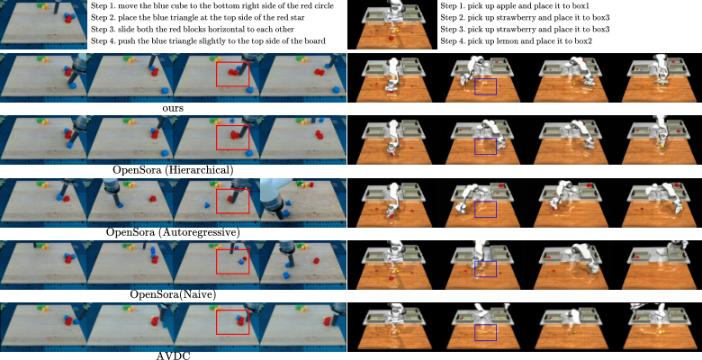
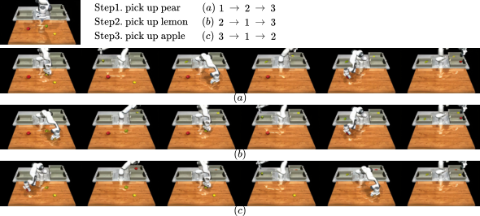
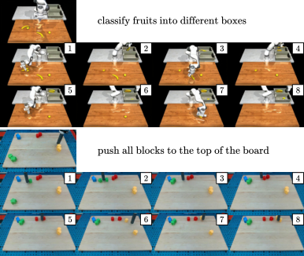
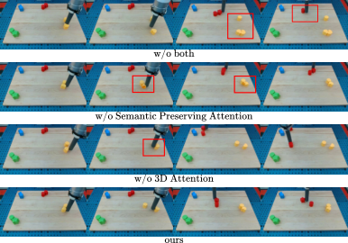

RoboEnvision: A Long-Horizon Video Generation Model for Multi-Task Robot Manipulation
1. Quick overview of the paper
| What should the paper solve? | Existing robot video diffusion methods mostly generate short-duration videos; when performing long-distance tasks, short videos are usually strung together autoregressively, causing the number, shape, position and task semantics of objects in the video to gradually drift, and errors in execution of actions will also accumulate. What the paper wants to solve is: given a high-level long-range instruction and an initial image, how to generate a long-range robot operation video with consistent semantics, stable objects, and usable for action regression in one go. |
|---|---|
| The author's approach | RoboEnvision splits long-term tasks into "planned anchor points + local frame complementing + action regression": first use GPT4-o1/DeepSeek/manual to decompose high-level instructions into atomic instructions; keyframe diffusion generates key frames for the end state of each subtask; filling diffusion completes short videos between adjacent key frames; and finally uses a lightweight spatio-temporal Transformer policy model to return the status of robot joints and grippers from the generated video. |
| most important results | In terms of video quality, RoboEnvision has the best five indicators in the LHMM data set: LPIPS 0.1282, SSIM 0.5820, PSNR 17.27, FVD 205.78, CLIP 23.99; in LanguageTable, four indicators except CLIP are the best. In terms of action execution, the success rate of LHMM's 45 long-range tasks reaches 67.4%, which is significantly higher than UniPi 23.5%, RDT1B 34.1%, and Ours-Autoregressive 27.0%. |
| Things to note when reading | Don't just look at the sentence "long video generation is better", but ask three links: whether the VLM decomposition is reliable; whether keyframe diffusion really generates the corresponding end state for each sub-instruction; whether the success rate improvement of the policy model comes from long-range video distribution, decoder architecture, or MuJoCo/LHMM data settings. Another important point is that this method is still open-loop execution, not closed-loop error correction. |

2. Motivation and problem definition
2.1 Why short video concatenation is not enough
Robotic video generation has been used for planning, verification, policy learning, and simulation data generation, but most work deals with short-term actions, such as a pick or a place. Long-range tasks such as "clear the table" or "make a dish" contain multiple sub-goals, object state changes across stages, operation sequence constraints, and large ranges of motion. If each segment continues to be generated only based on the last frame of the previous segment, errors will accumulate over time: objects may disappear, shape deformation, and quantity change, and subsequent videos will increasingly deviate from the high-level target.
The author believes that long-range robot video is not just about "more frames", but "the semantic and spatial states of multiple task stages must be stable at the same time." So they introduced keyframes as global anchors instead of segment-by-segment rolling generation.
2.2 Problem definition
The long-range video generation task inputs an initial image $x^0$ and a high-level instruction $l_{HL}$, which can be decomposed into $K$ atomic instructions $l^i$. The goal is to generate a complete video:
Among them $x\in\mathbb{R}^{N\times3\times H\times W}$. The key is not to directly let a model eat a long prompt and generate $N$ frames, but to generate $K$ key frames first:
Then add frames to adjacent keyframes:
2.3 Contribution positioning
- A hierarchical video generation pipeline for long-range robot operation is proposed, combining VLM, keyframe diffusion, filling diffusion and policy model.
- Design keyframe-instruction cross-attention so that each keyframe only focuses on the corresponding atomic instruction, enhancing instruction-keyframe alignment.
- 3D attention and semantics preserving attention are proposed to use the initial image VAE features to enhance the consistency of key frame object shape, position and quantity.
- A lightweight transformer-based policy model is proposed to regress robot joint and gripper states from the generated long-range video, and exceeds baselines such as UniPi and RDT1B in the LHMM long-range task.
4. Detailed explanation of method
4.1 Overall framework
The process of RoboEnvision is:
- Use VLM or reasoning model to break high-level tasks into low-level atomic instructions.
- Keyframe diffusion generates keyframes based on the initial image and the atomic command chain, and each keyframe corresponds to a subtask end state.
- Filling diffusion generates short videos between each pair of adjacent keyframes, and all segments can be filled in parallel.
- Policy model regresses robot joint states and gripper states from keyframes and partially interpolated frames.

4.2 VLM sub-task decomposition
High-level instructions such as "place all objects in the box" or "push all blocks to the left" will first be split into $K$ low-level instructions. The paper says that GPT4-o1 is superior to traditional VLM in spatial reasoning, and can improve stability through in-context template, such as using something like this in LanguageTable pick the {color} {object} or push the {color} {shape} block at the {top,bottom,left,right} of {color} {shape} block template.
This step is the entry point for task planning of the entire pipeline. If the order or spatial relationship of atomic instructions is wrong, subsequent video generation and motion regression will be wrong.
4.3 Keyframe Diffusion
Keyframe diffusion receives $B$ batches and $K$ keyframes of video $x_k\in\mathbb{R}^{B\times K\times3\times H\times W}$. VAE compress it to latent:
forward diffusion adds Gaussian noise:
The training target is standard noise prediction:
The base architecture is Diffusion Transformer from OpenSora, including spatial attention, temporal attention, text cross-attention and FFN.
4.4 Keyframe-Instruction Cross-Attention
Ordinary cross-attention will cause all keyframe tokens to view all text tokens at the same time, which is prone to the situation of "the second keyframe being mixed with the third instruction". The author uses diagonal block mask $\mathcal{M}$ to allow the feature of the $i$ keyframe to cross-attend only with the $i$ instruction embedding:
$\mathcal{M}$ is 0 for diagonal blocks and $-\infty$ for off-diagonal blocks. This makes the keyframe sequence more like a "subtask end status list" rather than a blurry long prompt video.
4.5 3D Attention and Semantics Preserving Attention
Even with keyframe and instruction alignment, robot videos still suffer from small object disappearance, shape deformation, and positional drift. The author believes that the reason is that the distance between adjacent key frames is large and the object movement is large, which exceeds the training distribution of ordinary short video temporal attention.
3D attention Extend attention from only temporal or spatial dimensions to all spatio-temporal tokens: $(B, KH_zW_z, C)$. It's more expensive, but better suited for modeling large movements across frames.
Semantics Preserving Attention, SPA Re-inject the VAE feature of the initial image in the spatial attention of each transformer block. Compared with CLIP hidden state, VAE feature retains finer-grained spatial details and is in the same feature space as DiT latent. The formula is:
Here $z^0$ is the initial image VAE feature. Intuitively, it constantly reminds the model: "What objects are in the initial scene and what do they look like".
4.6 Filling Diffusion
Filling diffusion takes two adjacent key frames $(x^{k_{i-1}}, x^{k_i})$ and the corresponding atomic instruction $l^i$ as conditions to generate a short video between the two frames:
Since the conditions of each gap have been determined, phase 2 can run in parallel, which is more conducive to inference acceleration than autoregressive waiting for the previous segment to be generated, and also reduces error propagation.
4.7 Robot Policy Model
The Policy model is a spatio-temporal transformer-based architecture that generates video regression robot joint states and gripper states. It is trained independently from the video model, and the training data comes from the simulator's ground truth. The author emphasizes that ground-truth keyframes and some interpolated frames are selected during training instead of only short-range continuous frames; the reason is that the robot joints change more between long-range keyframes and are closer to the long-horizon distribution.
The architecture contains transformer blocks for spatial attention, temporal attention, and FFN; the decoder uses ResNet to downsample to joint space instead of MLP or global average pooling. After generating long-range video during inference, the policy model outputs the joint status and then executes it in open-loop in MuJoCo.
5. Experiments and results
5.1 Dataset and training settings
| Project | settings |
|---|---|
| LanguageTable | The author combines short-range video clips into long-range videos through optical flow consistency check; the last frame of each clip is used as the keyframe. |
| LHMM | Long-Horizon Manipulation in MuJoCo, create a new simulation data set, including grocery/tool related long-range tasks; keyframe annotation is obtained by grasp detection in the simulator. |
| Data size | LanguageTable 50k; LHMM 90k; number of instructions from 3 to 18. |
| training resolution | LanguageTable: $360\times640$; LHMM: $180\times320$. |
| code and models | Developed based on OpenSora; video diffusion model has about 800M parameters. |
| Video evaluation sample | LanguageTable has 124 generated videos; LHMM has 100 generated videos. |
5.2 Long-range video quality results
Evaluation metrics include LPIPS, SSIM, PSNR, FVD, and CLIP Score. The baseline includes hierarchical, autoregressive, and naive versions of OpenSora, as well as AVDC.
| Dataset | Method | LPIPS ↓ | SSIM ↑ | PSNR ↑ | FVD ↓ | CLIP ↑ |
|---|---|---|---|---|---|---|
| LanguageTable | OpenSora Hierarchical | 0.1445 | 0.8269 | 22.82 | 147.37 | 24.57 |
| OpenSora Autoregressive | 0.1795 | 0.7839 | 21.77 | 176.61 | 24.15 | |
| OpenSora Naive | 0.1723 | 0.8053 | 21.77 | 138.31 | 25.49 | |
| AVDC | 0.1857 | 0.7687 | 21.32 | 189.64 | 23.32 | |
| Ours | 0.1324 | 0.8273 | 23.12 | 136.75 | 24.45 | |
| LHMM | OpenSora Hierarchical | 0.1564 | 0.5257 | 16.61 | 231.02 | 23.51 |
| OpenSora Autoregressive | 0.1701 | 0.5232 | 16.46 | 241.35 | 23.58 | |
| OpenSora Naive | 0.2086 | 0.4983 | 15.52 | 274.85 | 22.55 | |
| AVDC | 0.2343 | 0.4729 | 15.33 | 267.93 | 21.37 | |
| Ours | 0.1282 | 0.5820 | 17.27 | 205.78 | 23.99 |
The results show that hierarchical alone is not enough, and RoboEnvision's attention design further improves consistency; LanguageTable has the highest CLIP of Naive, but its visual quality and consistency are poor, indicating that CLIP cannot alone represent robot video usability.

5.3 Instruction reordering and data enhancement potential
The authors show that by changing the order of atomic instructions, keyframe diffusion can generate long-range execution videos in different orders. This is used to support the potential of "data augmentation": based on existing video data, by shuffling the order of tasks, more paired data of visual observations and robot joint states can be generated, extending the VLA pre-trained distribution.

5.4 Policy Model Success Rate
The authors evaluate action execution on 45 long-range tasks in LHMM, where the task is to pick/place multiple grocery and tool objects. The long-range video is first generated by the model. The policy model converts the video frame by frame into joint control commands and imports them into MuJoCo for execution.
| Method | Success Rate |
|---|---|
| UniPi | 23.5% |
| RDT1B | 34.1% |
| Ours | 67.4% |
| Ours (short-horizon) | 49.4% |
| Ours (Autoregressive) | 27.0% |
Key interpretation: Ours short-horizon is still higher than UniPi/RDT1B, but 18 points lower than the full model, indicating that the policy model needs to be trained on the long-range keyframe distribution; Ours-Autoregressive is only 27.0%, indicating that simply changing to a better decoder cannot solve the long-range problem, and the generation paradigm itself is critical.
5.5 VLM long-range planning
The paper qualitatively demonstrates the effect of GPT4-o1 as a subtask director. It decomposes high-level instructions based on initial observations and template knowledge, keyframe diffusion and then generates long-range video plans based on the instruction chain.

5.6 Ablation: 3D Attention and SPA
| Model | LPIPS ↓ | SSIM ↑ | PSNR ↑ | FVD ↓ | CLIP ↑ |
|---|---|---|---|---|---|
| base | 0.1498 | 0.6924 | 20.07 | 184.71 | 24.10 |
| w/o SPA | 0.1415 | 0.7032 | 20.36 | 169.50 | 24.19 |
| w/o 3D | 0.1430 | 0.7102 | 20.11 | 168.83 | 24.21 |
| ours | 0.1305 | 0.7178 | 20.51 | 167.57 | 24.24 |
Both quantitative and qualitative support support that the two components are complementary: 3D attention is more conducive to the consistency of the number and location of objects; SPA is more conducive to the preservation of small object shapes and semantic details.

6. reproducibility Key Points
6.1 Data preparation
- LanguageTable: Short-range clips are required and spliced into long-range videos through optical flow consistency check.
- The last frame of each short clip serves as the keyframe, forming the supervision of keyframe diffusion.
- LHMM: requires MuJoCo long-range mission data, keyframe annotation and robot joint states; the paper uses grasp detection to generate keyframe annotation.
- High-level instruction requirements can be broken down into 3 to 18 atomic instructions.
6.2 Model training
| module | Training/Implementation Points |
|---|---|
| Keyframe diffusion | Based on OpenSora DiT; input initial image and instruction chain; introduce keyframe-instruction cross-attention. |
| 3D attention | Replace temporal attention so that attention covers all spatio-temporal tokens. |
| SPA | In each transformer block, the initial image VAE feature is projected into key/value and participates in spatial attention. |
| Filling diffusion | The conditions are adjacent key frames and corresponding low-level instructions; each segment can be supplemented in parallel. |
| Policy model | Independent training; input keyframes and partially interpolated frames; output joint states and gripper states. |
6.3 Evaluation indicators
- Video quality: LPIPS, SSIM, PSNR, FVD, CLIP Score.
- Action execution: LHMM 45 long-range mission success rates.
- Qualitative check: whether the number of objects is maintained, whether the shape is deformed, whether key frames are aligned with sub-instructions, and whether changing the order of instructions changes the order of execution.
7. Analysis, Limitations and Boundaries
7.1 The most valuable part of this paper
The most valuable part of this paper is that it splits the robot's long-range video generation into an intermediate representation that is more consistent with the task structure: key frames are not uniformly sampled video frames, but semantic anchors of the end status of each subtask. In this way, long-term generation is no longer about "rolling back from the previous frame", but first determines the global structure of the entire task chain, and then partially completes the dynamics.
The second value point is to test video quality and action executability together. The paper not only reports on LPIPS/FVD/CLIP, but also trains a policy model to regress joints from videos and executes it in MuJoCo. This provides closer control evidence on whether generated videos can be used for robots.
7.2 Why the results hold up
- The video evaluation covers two data sets, and all five indicators in LHMM are optimal, indicating that it is not an accidental improvement in a single data set.
- Compared with OpenSora naive, hierarchical, and autoregressive, it can distinguish the contributions of "the hierarchical paradigm itself" and "the new attention design of this article".
- The success rate of the policy model includes multiple ablation: short-horizon training and autoregressive inference both drop significantly, and it is important to support long-range training and long-range generation.
- In the Ablation table, base, w/o SPA, w/o 3D, and ours are compared step by step, and there are qualitative diagrams showing the shape/quantity/location issues of small objects.
- Qualitative experiments on changing the instruction order show that the model does not only remember fixed trajectories, but can adjust the generation according to the order of subtasks.
7.3 Main limitations
- Dependent on VLM decomposition: If high-level instructions are decomposed incorrectly, keyframe generation will deviate from the true goal from the first step. The paper mainly gives qualitative presentation and does not systematically evaluate VLM decomposition accuracy.
- Execution is still open-loop: After generating the video and joint trajectories, they are executed in MuJoCo in an open loop without online visual feedback for error correction; errors may be more serious in real robot long-range tasks.
- Insufficient verification of real robots: Action success rates are evaluated on LHMM/MuJoCo, not real hardware long-range execution.
- Dataset construction relies on simulators and rules: LHMM keyframes are obtained by grasp detection, and LanguageTable is spliced by optical flow. There is still a gap between the real long-range demonstration distribution.
- Physical consistency remains indirect: LPIPS/FVD/CLIP are not completely equivalent to real executability; policy model success rate provides supplementation, but may still be affected by simulator and training distribution.
- Computational cost and parameter details are incomplete: The model is about 800M, but the paper does not provide complete training resources, epoch, optimizer and other details, making it difficult to reproduce.
7. 4 Boundary conditions
| Applicable conditions | Conditions that require caution |
|---|---|
| Tasks can be naturally decomposed into several atomic subtasks, and each subtask has a clear end state. | The task requires continuous feedback, does not have a clear keyframe, or the intermediate state is difficult to anchor with images. |
| Key objects in the scene are visible, and the simulator can provide keyframe/joint supervision. | Strong occlusion in the real environment, deformable objects, and contact status are not visible. |
| The goal is to generate long-range vision plans or simulation training data. | Real-world robot deployments requiring safe closed-loop execution. |
| VLM can be accepted as the upstream planner and prompt/template can be adjusted. | High-level instruction ambiguity, or error-prone tasks in VLM space reasoning. |
8. Preparation for group meeting Q&A
Q1: What is the biggest difference between RoboEnvision and autoregressive long video?
Autoregressive continues to generate segment by segment using the last frame of the previous segment, and errors will be passed; RoboEnvision first generates all subtask key frames as global anchor points, and then locally fills the frame. It sacrifices some single-segment degrees of freedom in exchange for better long-range structure and object consistency.
Q2: What problem does keyframe-instruction cross-attention solve?
It allows the $i$ keyframe to only look at the $i$ atomic instruction, preventing all keyframes from paying attention to the entire prompt. This way the keyframes more clearly correspond to the completion status of each subtask.
Q3: What do 3D attention and SPA do respectively?
3D attention prefers cross-spatial-temporal modeling to help maintain the number and position of objects; SPA uses the initial image VAE feature to provide fine-grained semantic and shape information to help small objects not be deformed or lost. ablation shows that the combination of the two is the best.
Q4: Why does the policy model need to be trained on long-range keyframes?
The joint changes between long-range keyframes are greater and the distribution is richer than that of short-range consecutive frames. Using only short-horizon frames for training, even using long-range video inference will drop to 49.4%; autoregressive generation and execution is even lower, only 27.0%.
Q5: Which is the strongest result?
The LHMM success rate of 67.4% is the result closest to robot control; the video indicator is the most convincing LHMM five-item result. The two taken together show that it not only generates more similar images, but also supports joint trajectory regression.
Q6: What is the most likely place to be questioned?
Insufficient validation on real robots, no systematic quantification of VLM decomposition, and open-loop execution. The paper proves that simulated long-range video planning and action regression are valuable, but there is still a significant distance from real long-range robot closed-loop deployment.